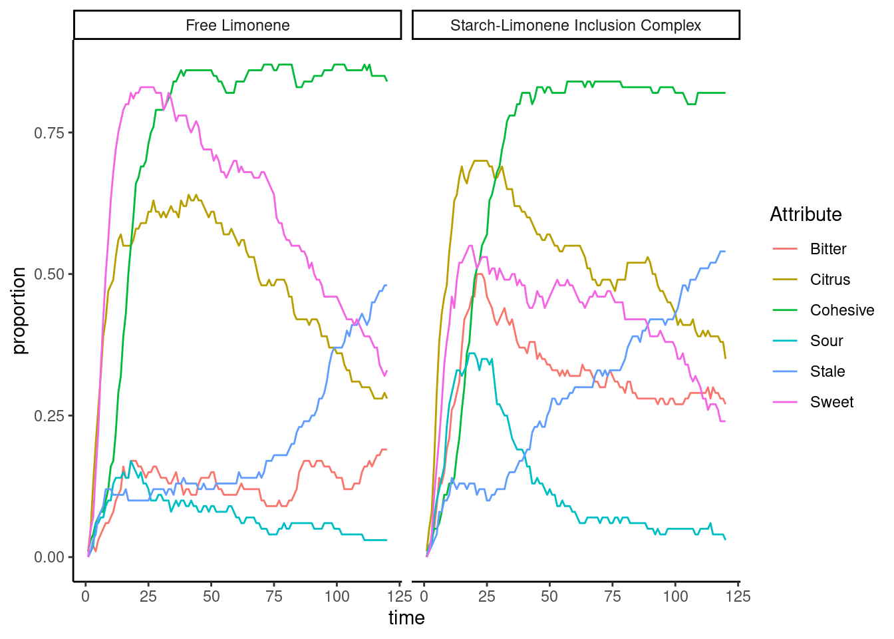

Lab interview
2024-03-02
Last updated: 2024-03-05
Checks: 6 1
Knit directory: interview/
This reproducible R Markdown analysis was created with workflowr (version 1.7.1). The Checks tab describes the reproducibility checks that were applied when the results were created. The Past versions tab lists the development history.
Great! Since the R Markdown file has been committed to the Git repository, you know the exact version of the code that produced these results.
Great job! The global environment was empty. Objects defined in the global environment can affect the analysis in your R Markdown file in unknown ways. For reproduciblity it’s best to always run the code in an empty environment.
The command set.seed(20240302) was run prior to running
the code in the R Markdown file. Setting a seed ensures that any results
that rely on randomness, e.g. subsampling or permutations, are
reproducible.
Great job! Recording the operating system, R version, and package versions is critical for reproducibility.
Nice! There were no cached chunks for this analysis, so you can be confident that you successfully produced the results during this run.
Using absolute paths to the files within your workflowr project makes it difficult for you and others to run your code on a different machine. Change the absolute path(s) below to the suggested relative path(s) to make your code more reproducible.
| absolute | relative |
|---|---|
| /home/hannah/interview/ | . |
Great! You are using Git for version control. Tracking code development and connecting the code version to the results is critical for reproducibility.
The results in this page were generated with repository version 2667d8c. See the Past versions tab to see a history of the changes made to the R Markdown and HTML files.
Note that you need to be careful to ensure that all relevant files for
the analysis have been committed to Git prior to generating the results
(you can use wflow_publish or
wflow_git_commit). workflowr only checks the R Markdown
file, but you know if there are other scripts or data files that it
depends on. Below is the status of the Git repository when the results
were generated:
Ignored files:
Ignored: .Rproj.user/
Untracked files:
Untracked: data/df_flavor.csv
Untracked: data/df_state-breakdown.csv
Untracked: data/df_state_total.csv
Note that any generated files, e.g. HTML, png, CSS, etc., are not included in this status report because it is ok for generated content to have uncommitted changes.
These are the previous versions of the repository in which changes were
made to the R Markdown (analysis/tasks.rmd) and HTML
(docs/tasks.html) files. If you’ve configured a remote Git
repository (see ?wflow_git_remote), click on the hyperlinks
in the table below to view the files as they were in that past version.
| File | Version | Author | Date | Message |
|---|---|---|---|---|
| html | 2667d8c | Hannah Van Wyk | 2024-03-05 | Build site. |
| html | d527e7c | Hannah Van Wyk | 2024-03-04 | Build site. |
| Rmd | a73f9db | Hannah Van Wyk | 2024-03-04 | Start my new project |
| html | c8abae7 | Hannah Van Wyk | 2024-03-04 | Build site. |
| Rmd | b5fb7aa | Hannah Van Wyk | 2024-03-04 | Start my new project |
| html | 3201cdf | Hannah Van Wyk | 2024-03-04 | Build site. |
| Rmd | becfd2e | Hannah Van Wyk | 2024-03-04 | Start my new project |
| html | 2f2f9db | Hannah Van Wyk | 2024-03-04 | Build site. |
| html | 15db2ef | Hannah Van Wyk | 2024-03-04 | Build site. |
| Rmd | 31cc92b | Hannah Van Wyk | 2024-03-04 | Start my new project |
| html | b0ef3e6 | Hannah Van Wyk | 2024-03-04 | Build site. |
| Rmd | 88c73ce | Hannah Van Wyk | 2024-03-04 | Start my new project |
| html | e33abe8 | Hannah Van Wyk | 2024-03-04 | Build site. |
| Rmd | 9f3a755 | Hannah Van Wyk | 2024-03-04 | Start my new project |
| html | 31e0b0c | Hannah Van Wyk | 2024-03-04 | Build site. |
| Rmd | ae45107 | Hannah Van Wyk | 2024-03-04 | Start my new project |
| html | c167d99 | Hannah Van Wyk | 2024-03-04 | Build site. |
| Rmd | 938c1f2 | Hannah Van Wyk | 2024-03-04 | Start my new project |
| html | 60c6511 | Hannah Van Wyk | 2024-03-04 | Build site. |
| Rmd | b93a89b | Hannah Van Wyk | 2024-03-04 | Start my new project |
| html | 2aa679f | Hannah Van Wyk | 2024-03-04 | Build site. |
| Rmd | c8ebe7a | Hannah Van Wyk | 2024-03-04 | Start my new project |
| html | 11d92b3 | Hannah Van Wyk | 2024-03-04 | Build site. |
| Rmd | 3db7fee | Hannah Van Wyk | 2024-03-04 | Start my new project |
| html | 63dabc0 | Hannah Van Wyk | 2024-03-02 | Build site. |
| Rmd | 3399b05 | Hannah Van Wyk | 2024-03-02 | Start my new project |
| html | 360bd22 | Hannah Van Wyk | 2024-03-02 | Build site. |
| Rmd | 4c1ae59 | Hannah Van Wyk | 2024-03-02 | Start my new project |
| html | a44801d | Hannah Van Wyk | 2024-03-02 | Build site. |
| Rmd | 7677906 | Hannah Van Wyk | 2024-03-02 | Start my new project |
| html | c9d7a75 | Hannah Van Wyk | 2024-03-02 | Build site. |
| Rmd | 59a05f3 | Hannah Van Wyk | 2024-03-02 | Start my new project |
| html | 19a8753 | Hannah Van Wyk | 2024-03-02 | Build site. |
| Rmd | 4dcc9fd | Hannah Van Wyk | 2024-03-02 | Start my new project |
| html | 5dbcce5 | Hannah Van Wyk | 2024-03-02 | Build site. |
| Rmd | 4b01cc5 | Hannah Van Wyk | 2024-03-02 | Start my new project |
| html | 1a8f8eb | Hannah Van Wyk | 2024-03-02 | Build site. |
| html | 7515921 | Hannah Van Wyk | 2024-03-02 | Build site. |
| Rmd | eff08eb | Hannah Van Wyk | 2024-03-02 | Start my new project |
| html | 9f24e03 | Hannah Van Wyk | 2024-03-02 | Build site. |
| Rmd | 6c3069b | Hannah Van Wyk | 2024-03-02 | Start my new project |
| html | 480bf7d | Hannah Van Wyk | 2024-03-02 | Build site. |
| Rmd | 55a967c | Hannah Van Wyk | 2024-03-02 | Start my new project |
| html | 4690c41 | Hannah Van Wyk | 2024-03-02 | Build site. |
| Rmd | eedb4a6 | Hannah Van Wyk | 2024-03-02 | Start my new project |
| html | 4d9f4de | Hannah Van Wyk | 2024-03-02 | Build site. |
| html | c0af6b0 | Hannah Van Wyk | 2024-03-02 | Build site. |
| Rmd | c518586 | Hannah Van Wyk | 2024-03-02 | Start my new project |
| html | 87d0418 | Hannah Van Wyk | 2024-03-02 | Build site. |
| Rmd | 78c9cf9 | Hannah Van Wyk | 2024-03-02 | Start my new project |
| html | ea24d8f | Hannah Van Wyk | 2024-03-02 | Build site. |
| Rmd | fc2bec3 | Hannah Van Wyk | 2024-03-02 | Start my new project |
| html | 7c39b3e | Hannah Van Wyk | 2024-03-02 | Build site. |
| Rmd | 78f43a7 | Hannah Van Wyk | 2024-03-02 | Start my new project |
| html | 2434a5d | Hannah Van Wyk | 2024-03-02 | Build site. |
| Rmd | 8444829 | Hannah Van Wyk | 2024-03-02 | Start my new project |
| html | 7833a0f | Hannah Van Wyk | 2024-03-02 | Build site. |
| html | ceaa370 | Hannah Van Wyk | 2024-03-02 | Build site. |
| Rmd | 3d2acee | Hannah Van Wyk | 2024-03-02 | Start my new project |
| html | c97b32a | Hannah Van Wyk | 2024-03-02 | Build site. |
| Rmd | f4e79ce | Hannah Van Wyk | 2024-03-02 | Start my new project |
| html | 19f47e8 | Hannah Van Wyk | 2024-03-02 | Build site. |
| Rmd | 38dea1c | Hannah Van Wyk | 2024-03-02 | Start my new project |
| html | 1f2e90e | Hannah Van Wyk | 2024-03-02 | Build site. |
| Rmd | 34e7aef | Hannah Van Wyk | 2024-03-02 | Start my new project |
| html | e9a0356 | Hannah Van Wyk | 2024-03-02 | Build site. |
| Rmd | 1ea9f9e | Hannah Van Wyk | 2024-03-02 | Start my new project |
| html | b796cc0 | Hannah Van Wyk | 2024-03-02 | Build site. |
| Rmd | af166cc | Hannah Van Wyk | 2024-03-02 | Start my new project |
| html | 2efeb15 | Hannah Van Wyk | 2024-03-02 | Build site. |
| Rmd | bc61adf | Hannah Van Wyk | 2024-03-02 | Start my new project |
| html | 5e2d623 | Hannah Van Wyk | 2024-03-02 | Build site. |
| Rmd | fab0ffc | Hannah Van Wyk | 2024-03-02 | Start my new project |
| html | b53d68f | Hannah Van Wyk | 2024-03-02 | Build site. |
| Rmd | 101a18a | Hannah Van Wyk | 2024-03-02 | Start my new project |
| html | 7b99175 | Hannah Van Wyk | 2024-03-02 | Build site. |
| Rmd | 54e5c55 | Hannah Van Wyk | 2024-03-02 | Start my new project |
| html | dd0975b | Hannah Van Wyk | 2024-03-02 | Build site. |
| Rmd | 7a11c10 | Hannah Van Wyk | 2024-03-02 | Start my new project |
| html | 41480b1 | Hannah Van Wyk | 2024-03-02 | Build site. |
| Rmd | 3047137 | Hannah Van Wyk | 2024-03-02 | Start my new project |
| html | c4fa980 | Hannah Van Wyk | 2024-03-02 | Build site. |
| Rmd | e82f837 | Hannah Van Wyk | 2024-03-02 | Start my new project |
| html | 503b027 | Hannah Van Wyk | 2024-03-02 | Build site. |
| Rmd | f316901 | Hannah Van Wyk | 2024-03-02 | Start my new project |
| html | 99150a2 | Hannah Van Wyk | 2024-03-02 | Build site. |
| Rmd | a383b84 | Hannah Van Wyk | 2024-03-02 | Start my new project |
| html | 5de81d5 | Hannah Van Wyk | 2024-03-02 | Build site. |
| Rmd | c9b622f | Hannah Van Wyk | 2024-03-02 | Start my new project |
| html | d154122 | Hannah Van Wyk | 2024-03-02 | Build site. |
| Rmd | dc63a76 | Hannah Van Wyk | 2024-03-02 | Start my new project |
| html | 31d64aa | Hannah Van Wyk | 2024-03-02 | Build site. |
| Rmd | 2d5b2d9 | Hannah Van Wyk | 2024-03-02 | Start my new project |
| html | 71a340d | Hannah Van Wyk | 2024-03-02 | Build site. |
| Rmd | 6cd2142 | Hannah Van Wyk | 2024-03-02 | Start my new project |
| html | 55e1985 | Hannah Van Wyk | 2024-03-02 | Build site. |
| Rmd | 732162c | Hannah Van Wyk | 2024-03-02 | Start my new project |
| html | d4763b7 | Hannah Van Wyk | 2024-03-02 | Build site. |
| Rmd | bdf7540 | Hannah Van Wyk | 2024-03-02 | Start my new project |
| html | bfb4d88 | Hannah Van Wyk | 2024-03-02 | Build site. |
| Rmd | 93fa7dd | Hannah Van Wyk | 2024-03-02 | Start my new project |
| html | 449cd8a | Hannah Van Wyk | 2024-03-02 | Build site. |
| Rmd | 3fb4bbc | Hannah Van Wyk | 2024-03-02 | Start my new project |
| html | 3d448d2 | Hannah Van Wyk | 2024-03-02 | Build site. |
| Rmd | 7dda0b0 | Hannah Van Wyk | 2024-03-02 | Start my new project |
| html | 18227fc | Hannah Van Wyk | 2024-03-02 | Build site. |
| Rmd | f10f92e | Hannah Van Wyk | 2024-03-02 | Start my new project |
| html | 48e1615 | Hannah Van Wyk | 2024-03-02 | Build site. |
| Rmd | c4a11c9 | Hannah Van Wyk | 2024-03-02 | Start my new project |
| html | a2b211f | Hannah Van Wyk | 2024-03-02 | Build site. |
| Rmd | 48f4372 | Hannah Van Wyk | 2024-03-02 | Start my new project |
| html | 3f4ec38 | Hannah Van Wyk | 2024-03-02 | Build site. |
| Rmd | 43cb429 | Hannah Van Wyk | 2024-03-02 | Start my new project |
| html | daab509 | Hannah Van Wyk | 2024-03-02 | Build site. |
| Rmd | dbfa3cd | Hannah Van Wyk | 2024-03-02 | Start my new project |
| html | 7fbc682 | Hannah Van Wyk | 2024-03-02 | Build site. |
| Rmd | 8a02c80 | Hannah Van Wyk | 2024-03-02 | Start my new project |
| html | 4064343 | Hannah Van Wyk | 2024-03-02 | Build site. |
| Rmd | d2aebfb | Hannah Van Wyk | 2024-03-02 | Start my new project |
| html | 765a045 | Hannah Van Wyk | 2024-03-02 | Build site. |
| Rmd | 00b3f1b | Hannah Van Wyk | 2024-03-02 | Start my new project |
| html | fb8a1a2 | Hannah Van Wyk | 2024-03-02 | Build site. |
| html | cfd7aac | Hannah Van Wyk | 2024-03-02 | Build site. |
| Rmd | 9994afb | Hannah Van Wyk | 2024-03-02 | Start my new project |
| html | 5b03046 | Hannah Van Wyk | 2024-03-02 | Build site. |
| Rmd | efbb395 | Hannah Van Wyk | 2024-03-02 | Start my new project |
| html | c490ea1 | Hannah Van Wyk | 2024-03-02 | Build site. |
| Rmd | 40bc209 | Hannah Van Wyk | 2024-03-02 | Start my new project |
| html | 8de5f3f | Hannah Van Wyk | 2024-03-02 | Build site. |
| Rmd | 1eaabcd | Hannah Van Wyk | 2024-03-02 | Start my new project |
| html | cdda28a | Hannah Van Wyk | 2024-03-02 | Build site. |
| Rmd | 6823bd1 | Hannah Van Wyk | 2024-03-02 | Start my new project |
| html | 9ad5638 | Hannah Van Wyk | 2024-03-02 | Build site. |
| Rmd | 890ba5e | Hannah Van Wyk | 2024-03-02 | Start my new project |
| html | 6c99a87 | Hannah Van Wyk | 2024-03-02 | Build site. |
| Rmd | ab43fee | Hannah Van Wyk | 2024-03-02 | Start my new project |
| html | 7f550fe | Hannah Van Wyk | 2024-03-02 | Build site. |
| html | 2fd5e5d | Hannah Van Wyk | 2024-03-02 | Build site. |
| Rmd | 8158e44 | Hannah Van Wyk | 2024-03-02 | Start my new project |
Task 1: Demographics representation in forensic genetics database
sb = read.csv("./data/df_state-breakdown.csv")
st = read.csv("./data/df_state_total.csv")
sb <- sb %>%
mutate(Value = as.numeric(str_remove(Value, "%")) / 100)
# Separate the data into database and population datasets
database_data <- sb %>% filter(Context == "Database")
population_data <- sb %>% filter(Context == "Population")
# Merge the two datasets
merged_data <- database_data %>%
inner_join(population_data, by = c("State", "Demographic.Group")) %>%
dplyr::rename(Value_Database = Value.x, Value_Population = Value.y) %>%
mutate(Difference = Value_Database - Value_Population)ggplot(merged_data, aes(x = Demographic.Group, y = State, fill = Difference)) +
geom_tile(color = "white",size=2) +
geom_text(aes(label = round(Difference, 2)),size=3) +
scale_fill_gradientn(colours = c("#7074c0", "#f1f1f1", "#baad03"),
values = scales::rescale(c(-0.5, -0.05, 0, 0.05, 0.5)),
labels = c("Underrepresented\nin Dataset","","Equally represented","","Overrepresented\nin Dataset")) +
theme_classic() +
scale_x_discrete(guide = guide_axis(angle = 90)) +
labs(fill='') +
xlab(c(""))+ ylab(c("")) +
theme(axis.text=element_text(size=12),legend.text=element_text(size=12),legend.position="right")
| Version | Author | Date |
|---|---|---|
| 31e0b0c | Hannah Van Wyk | 2024-03-04 |
Task 2: Flavor detection time series analysis
flavor = read.csv("./data/df_flavor.csv")
names = c()
for (i in 1:120){
names[i] = paste0("time_",i,"s")
}
flavor_long = melt(flavor, measure.vars = names, variable.name = "variable_names" , value.name = "value")
flavor_long <- flavor_long %>%
mutate(time = str_remove(variable, "time_")) %>%
mutate(time = as.numeric(str_remove(time, "s"))) %>%
group_by(time,Attribute,Sample_Name,Blinding_Code) %>%
summarise(proportion = mean(value))
ggplot(flavor_long) +
geom_line(aes(x = time, y=proportion,color=Attribute)) +
facet_wrap(.~Sample_Name) +
theme_classic()
results = as.data.frame(matrix(nrow = length(unique(flavor_long$Attribute)),ncol = 5))
colnames(results) = c("Flavor","Gum", "Time to Peak (mins.)", "Max proportion","AUC")
i = 1
for (flavor in unique(flavor_long$Attribute)) {
for(gum in unique(flavor_long$Sample_Name)){
df = flavor_long[which(flavor_long$Attribute == flavor & flavor_long$Sample_Name == gum),]
# calculate AUC: measure of how much the flavor was detected overall
AUC = round(AUC(df$time, df$proportion),2)
# calculate tMax: time that it took to detect maximum proportion of people detecting that flavor
tmax = which.max(df$proportion)
# calculate maxp: maximum proportion of people that detected a flavor at a given time
max_p = max(df$proportion)
# add the stats to a dataframe
results[i,] = c(flavor,gum, tmax, max_p,AUC)
i = i + 1
}
}Free Limonene gum
results_g1 = results[which(results$Gum == "Free Limonene"),]
t1 <- kable(results_g1[,c(1,3,4,5)])
t1| Flavor | Time to Peak (mins.) | Max proportion | AUC | |
|---|---|---|---|---|
| 1 | Bitter | 118 | 0.19 | 15.09 |
| 3 | Citrus | 41 | 0.64 | 56.7 |
| 5 | Cohesive | 71 | 0.87 | 88.47 |
| 7 | Sour | 18 | 0.17 | 8.82 |
| 9 | Stale | 119 | 0.48 | 23.39 |
| 11 | Sweet | 22 | 0.83 | 71.95 |
Starch-Limonene Inclusion Complex gum
results_g2 = results[which(results$Gum == "Starch-Limonene Inclusion Complex"),]
t2 <- kable(results_g2[,c(1,3,4,5)])
t2| Flavor | Time to Peak (mins.) | Max proportion | AUC | |
|---|---|---|---|---|
| 2 | Bitter | 21 | 0.5 | 37.63 |
| 4 | Citrus | 20 | 0.7 | 61.66 |
| 6 | Cohesive | 57 | 0.84 | 83.07 |
| 8 | Sour | 18 | 0.36 | 15.43 |
| 10 | Stale | 118 | 0.54 | 33.9 |
| 12 | Sweet | 18 | 0.55 | 49.32 |
We could further stratify these tables based on gene types to see if the values differ between subgroups.
Individual-level analysis
flavor = read.csv("./data/df_flavor.csv")
names = c()
for (i in 1:120){
names[i] = paste0("time_",i,"s")
}
flavor_indiv = flavor[which(flavor$Sample_ID == 1),]
flavor_long_indiv = melt(flavor_indiv, measure.vars = names, variable.name = "variable_names" , value.name = "value")
flavor_long_indiv <- flavor_long_indiv %>%
mutate(time = str_remove(variable, "time_")) %>%
mutate(time = as.numeric(str_remove(time, "s"))) %>%
group_by(time,Attribute,Sample_Name,Blinding_Code) Flavor profile for Participant 1
ggplot(flavor_long_indiv) +
geom_line(aes(x = time, y=value,color=Attribute)) +
facet_grid(Attribute~Sample_Name) +
theme_classic()
Potential analysis: calculate pointwise mutual information (pmi) between each flavor combination.
This is a measure of association for binary events, capturing the probability they are observed together relative if they were independent:
\[ pmi = \frac{p(flavor_1 | flavor_2)}{p(flavor_1)} \\ \]
Analysis options:
(1) Calculate pmi for each flavor combination (e.g., flavor 1 = bitter; flavor 2 = sweet) for each individual for their 120 minutes of data and see if the value is different for people with different genes
(2) Calculate pmi for each flavor combination across all individuals at each time point to see if it is time-varying on a group level
(3) Calculate pmi between each flavor and itself (e.g., flavor 1 = bitter_FL; flavor 2 = bitter_SLIC) between the two gum types to see how much differently flavors are perceived between the two gum types
sessionInfo()R version 4.3.1 (2023-06-16)
Platform: x86_64-pc-linux-gnu (64-bit)
Running under: Ubuntu 22.04.3 LTS
Matrix products: default
BLAS: /usr/lib/x86_64-linux-gnu/openblas-pthread/libblas.so.3
LAPACK: /usr/lib/x86_64-linux-gnu/openblas-pthread/libopenblasp-r0.3.20.so; LAPACK version 3.10.0
locale:
[1] LC_CTYPE=en_US.UTF-8 LC_NUMERIC=C
[3] LC_TIME=en_US.UTF-8 LC_COLLATE=en_US.UTF-8
[5] LC_MONETARY=en_US.UTF-8 LC_MESSAGES=en_US.UTF-8
[7] LC_PAPER=en_US.UTF-8 LC_NAME=C
[9] LC_ADDRESS=C LC_TELEPHONE=C
[11] LC_MEASUREMENT=en_US.UTF-8 LC_IDENTIFICATION=C
time zone: America/New_York
tzcode source: system (glibc)
attached base packages:
[1] stats graphics grDevices utils datasets methods base
other attached packages:
[1] knitr_1.45 DescTools_0.99.50 xtable_1.8-4 reshape_0.8.9
[5] lubridate_1.9.2 forcats_1.0.0 stringr_1.5.0 dplyr_1.1.2
[9] purrr_1.0.2 readr_2.1.4 tidyr_1.3.0 tibble_3.2.1
[13] ggplot2_3.4.3 tidyverse_2.0.0 workflowr_1.7.1
loaded via a namespace (and not attached):
[1] gld_2.6.6 gtable_0.3.3 xfun_0.40 bslib_0.5.1
[5] processx_3.8.2 lattice_0.21-8 callr_3.7.3 tzdb_0.4.0
[9] vctrs_0.6.3 tools_4.3.1 ps_1.7.5 generics_0.1.3
[13] proxy_0.4-27 fansi_1.0.4 highr_0.10 pkgconfig_2.0.3
[17] Matrix_1.6-0 data.table_1.14.8 readxl_1.4.3 rootSolve_1.8.2.4
[21] lifecycle_1.0.3 farver_2.1.1 compiler_4.3.1 git2r_0.33.0
[25] Exact_3.2 munsell_0.5.0 getPass_0.2-4 httpuv_1.6.11
[29] class_7.3-22 htmltools_0.5.6 sass_0.4.7 yaml_2.3.7
[33] later_1.3.1 pillar_1.9.0 jquerylib_0.1.4 whisker_0.4.1
[37] MASS_7.3-60 cachem_1.0.8 boot_1.3-28 tidyselect_1.2.0
[41] digest_0.6.33 mvtnorm_1.2-2 stringi_1.7.12 labeling_0.4.2
[45] rprojroot_2.0.3 fastmap_1.1.1 grid_4.3.1 expm_0.999-7
[49] colorspace_2.1-0 lmom_3.0 cli_3.6.1 magrittr_2.0.3
[53] utf8_1.2.3 e1071_1.7-13 withr_2.5.0 scales_1.2.1
[57] promises_1.2.1 timechange_0.2.0 rmarkdown_2.25 httr_1.4.7
[61] cellranger_1.1.0 hms_1.1.3 evaluate_0.21 rlang_1.1.1
[65] Rcpp_1.0.11 glue_1.6.2 rstudioapi_0.15.0 jsonlite_1.8.7
[69] R6_2.5.1 plyr_1.8.8 fs_1.6.3